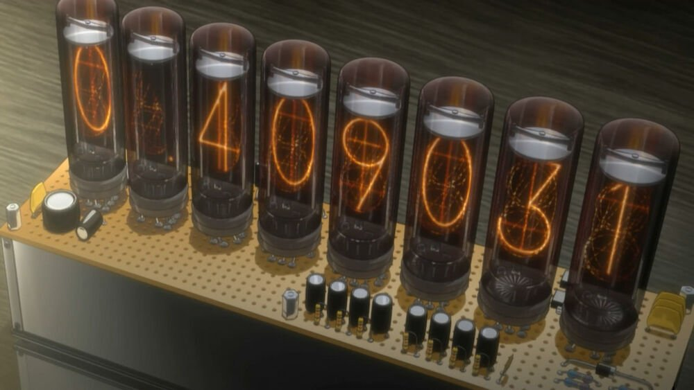

An object model marshaller for all occasions
Scorecards
We have a new Scorecard editor.
It needs to load PMML XML and save it. Great. It’d be less than useful if it could not.
We also support evaluation of PMML XML models. Super. It’s nice to be able to actually execute models too.
The problem
An object model marshaller for all occasions.
Our Scorecard example illustrates the problem clearly:
Two technologically disparate teams needing the same functionality yet duplicating effort.
"Back-end" developers choose their technology of choice and "front-end" developers choose theirs.
The end result is two code bases performing the same function.
Both needing maintenance and both at risk of diverging.

Enter an object model marshaller for all occasions.
There is a better way!
We have been working on an approach to generate source code from an XSD.
We are able to generate source code for both the class model, a deserlializer to load it and serializer to save it.
The source code is then compiled for different target environments where it executes.
Single source. Single maintenance branch. No divergence.
The approach
We use XJC with a Maven Plugin to generate JAXB annotated classes from the XSD.
In our working prototype we have chosen to generate both interfaces and concrete classes. The idea being that we can write further code against the interfaces but have concrete implementations to load and save different versions of the model. We then use the mapper-xml Maven Plugin to generate source code from the JAXB annotations to handle loading and saving.
We have a working prototype for PMML v4.4.
- The interfaces are generated here.
- The classes, deserializers and serializers are generated here.
Finally we can:
- Use GWT to compile the source code to run in a browser.
- Use J2CL to compile the source code to run in a browser.
- Use a Java Compiler to compile the source code to run in a JRE.